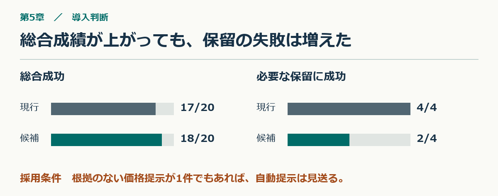
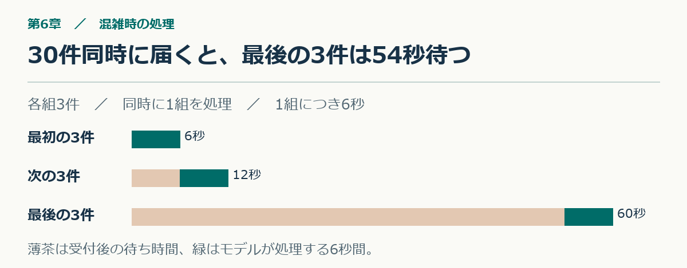

音声で学ぶ
再生すると全章が続きます。問いのあとに考える間が入り、そのまま解答を聴けます。
全10分40秒 音声を保存
章を選んで聴く
音声原稿
営業担当の葵さんが、北斗社に製品ピーを十台売りたいと相談しました。普段は価格表を探し、単価を確認し、金額を計算して、見積を送ります。最初の機能は、出典を添えた下書きを作るところまで。顧客に送る前には葵さんが確認します。改善を測る区間は、依頼を受けてから確認が終わるまでです。生成が三秒でも、確認に八分なら、八分も仕事の一部です。
 図を原寸で開く（新しいタブ）
図を原寸で開く（新しいタブ）依頼の受領から人による下書き確認までを計測する。 ここからはあなたの担当です。葵さんの作業記録を開くと、文章の生成は3秒、現行価格を探して確認するのに8分かかっています。この8分を減らすために、最初の試作品に何を一つ加えますか。効果を確かめる計測の開始点と終了点も決めてください。
私は既存フォームに現行単価と出典を表示します。同じ種類の案件で、依頼を受けた時刻から葵さんが確認を終えた時刻までを比べます。生成だけが速くても、確認が8分のままなら改善とは判定できません。 次に同じ場面に出会ったら、「確認完了までを測る」と思い出してください。
音声原稿
モデルは、依頼の文章から顧客、製品、数量の候補を読み取れます。アプリは候補を台帳と照合し、適用日と単価を確かめます。十台で、一台千円なら、プログラムで計算した税別一万円を承認画面に出します。文章を読む仕事と、業務データに基づいて値を確定する仕事を分けると、間違いを調べる場所も決まります。
 図を原寸で開く（新しいタブ）
図を原寸で開く（新しいタブ）モデルが項目を抽出し、アプリが照合・計算して根拠付き金額を表示する。 ここからはあなたの担当です。前章のフォームに自由入力を追加しました。葵さんの原文は「10箱、1箱12台」。抽出ログには「数量10」、登録欄には「台」とあります。このログで、登録を続けますか。担当エンジニアとして、どの値を表示し、何と照合してから登録するか答えてください。
いったん登録を保留します。換算条件を原文と照合し、10箱に12台ずつで合計120台と表示します。テストでは同じ依頼を流し、画面と登録先の両方が120台になることを確認します。 次に同じ場面に出会ったら、「数量には単位を添える」と思い出してください。
音声原稿
今日は十一月二十日です。北斗社向けに三枚の価格表が見つかりました。一枚目は単価九百円、十月末で期限切れ。二枚目は十一月からの標準価格、千円。三枚目は南社の担当者だけが読める特約、八百円。北斗社担当が使えるのは二枚目だけです。質問に関連する資料を探してモデルの入力に加える方法を、検索拡張生成、略してラグと呼びます。似ている資料を見つけても、権限と有効日は別に確認します。
 図を原寸で開く（新しいタブ）
図を原寸で開く（新しいタブ）旧版Aと権限外のCを除外し、現行版Bを使う。 ここからはあなたの担当です。北斗社の見積には11月の標準単価1,000円が適用されます。同じ担当者が試すと、価格表を取り直したときは1,000円、保存済み回答を使ったときだけ900円でした。この二つの記録から、最初にどこを調べますか。修正後、どんな順番で同じ依頼を流せば再発を確認できますか。
保存済み回答の資料版と有効日を調べます。旧版で回答を一度保存し、価格表を新版へ更新して、同じ担当者と顧客で再度照会します。再利用する経路でも新版の1,000円とその出典が出れば、今回の不具合を防げたと判断できます。 次に同じ場面に出会ったら、「誤答が生まれた地点を探す」と思い出してください。
音声原稿
葵さんは見積の第三版を承認しました。アプリは操作番号キュー十七を付けて登録を依頼しましたが、応答が途切れました。登録済みかどうかは今の時点では不明です。画面には確認中と表示し、同じ操作番号で登録先を調べます。同じ操作を繰り返しても一件だけ確定する性質を、べきとうせいと呼びます。
 図を原寸で開く（新しいタブ）
図を原寸で開く（新しいタブ）未着と登録済みのどちらでも応答は失われ得る。操作IDで照会する。 ここからはあなたの担当です。正しい単価で第三版を承認し、操作番号キュー十七で送信しました。応答はタイムアウト。その直後、葵さんが数量を12台に変えました。第三版の登録状態を何で調べますか。12台の依頼をいつ、どの操作番号で送るか、二つの版に分けて説明してください。
第三版はキュー十七で照会します。登録済みなら既存の見積番号を確認して訂正手順へ進み、照合不能なら確認中のまま人に引き継ぎます。第四版は金額を再承認して別の操作番号を使います。版ごとの承認と見積番号を台帳で突き合わせます。 次に同じ場面に出会ったら、「応答と登録結果を照合する」と思い出してください。
音声原稿
二十問で新旧の構成を試しました。うち十六問は金額を答えられる依頼、四問は根拠が足りず保留すべき依頼です。現行は合計十七問成功。候補は十八問成功でした。しかし候補は、保留すべき四問のうち二問で金額を出してしまいました。事前に、根拠のない価格を一件でも出したら自動提示を見送ると決めてあります。この条件では、候補の総合点が高くても採用は見送りです。

図を原寸で開く（新しいタブ）総合は17件から18件に改善したが、必要な保留の成功は4件から2件に減った。 ここからはあなたの担当です。次の配信候補は20問中18問で成功しました。ただし、価格の根拠がない4問のうち2問で金額を提示しました。責任者との約束は、根拠のない価格提示を1件も許さないことです。配信会議で採否を一文で伝えてください。すべてを担当者確認に回す修正が出たら、どの二種類の件数を再評価しますか。
今回は自動提示を見送ります。修正後は、回答できる16問の正答数と、保留すべき4問の保留数を分けて示します。全件保留なら後者は4件でも前者はゼロ。正答と保留の両方を測れば、使えない修正を発見できます。 次に同じ場面に出会ったら、「平均の裏にある失敗を見る」と思い出してください。
音声原稿
三十件が一斉に届きます。同時に処理できるのは三件、一件の処理は六秒。三件ずつ十組に分けると、最後の組は五十四秒待ち、六秒かけて処理され、六十秒で完了します。依頼ごとの待ち時間と処理時間を分けると、遅い理由が分かります。受付時に依頼番号を保存すれば、利用者が画面を開き直しても同じ結果を確認できます。

図を原寸で開く（新しいタブ）最後の3件は54秒待機し、6秒処理して受付から60秒で完了する。 ここからはあなたの担当です。同じサービスで、受付から完了まで60秒かかった依頼があります。今回は待ち行列が空で、モデル処理は平常の6秒です。登録の確認だけが遅れました。当番として最初に突き合わせる時刻を挙げてください。以前学んだ登録結果の照合には、どの番号を使いますか。
依頼番号で登録要求の送信、登録先で確定した時刻、応答または照会結果の受信を並べます。登録先での確定が早ければ、その後の通信や照会を調べます。応答が不明なときは、承認した版の操作番号で登録結果を確かめます。 次に同じ場面に出会ったら、「依頼番号で遅い区間を探す」と思い出してください。